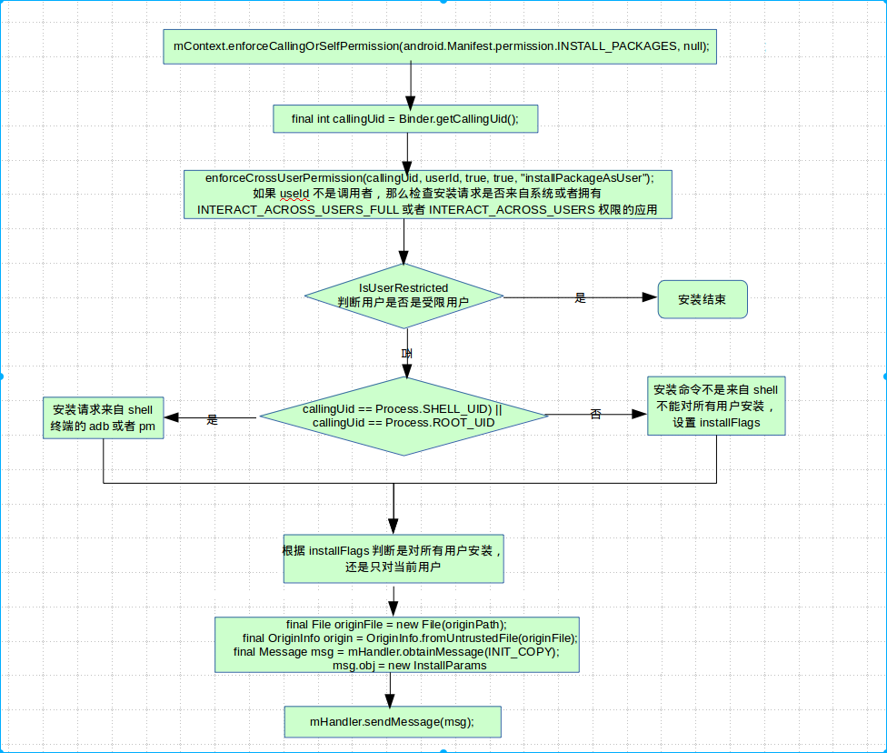

1. Android 6 PMS installation APK
Android core service
Android underlying development
Now let's formally analyze how Android installs an APK.
When using an Intent to install an apk file in an Android store, it is actually
called by an internal application packageinstaller of the Android system. This
built-in system application will display the installation process, and naturally
there is an interface. Everyone should be very familiar with it. It is nothing
more than displaying some progress bars, what permissions this app has, and
whether it is open after installation.
The packageinstaller is also a call to the PMS. When installing, the PMS related
interface will be called first, and the APK file, that is, its
AndroidMainifest.xml file, will be parsed, so that the app components,
permissions, package names and other information are obtained. Then check the
app is installed by the package name key. If it is installed, set the flag of
replace:INSTALL_REPLACE_EXISTING.
If it has not been installed before, then an activity will pop up, showing what
permissions the app has. There are two Buttons at the bottom: "Cancel" and
"Install". Click "Install" and it will start to install.
If the app has been installed before, the pop-up Activity will prompt: "Do you
want to install a new version of this app?...", and finally list the new app
compared to the app already installed on the device. What changes have been made
to the permissions, such as which permissions have been added. Two buttons are
also provided at the bottom: "Cancel" and "Install". Click "Install" and it will
start to install.
After clicking the "Install" button, it actually jumps to the InstallAppProgress
activity of the PackageInstaller.
Android-6/frameworks/base/core/java/android/content/pm/InstallAppProgress.java
In fact, it is the onCreate method of the activity. The method calls the
initView method. The initView method performs a series of judgments again and
creates an observer class PackageInstallObserver object for observing whether
the installation is successful. Then, the following method is called to start
the real installation. process.
pm.installPackageWithVerificationAndEncryption(mPackageURI, observer, installFlags,
installerPackageName, verificationParams, null);
Its code is implemented:
Android6.0/frameworks/base/core/java/android/app/ApplicationPackageManager.java
public void installPackageWithVerificationAndEncryption(Uri packageURI,
PackageInstallObserver observer, int flags, String installerPackageName,
VerificationParams verificationParams, ContainerEncryptionParams encryptionParams) {
installCommon(packageURI, observer, flags, installerPackageName, verificationParams,
encryptionParams);
}
The installCommon method is called directly inside:
private void installCommon(Uri packageURI,
PackageInstallObserver observer, int flags, String installerPackageName,
VerificationParams verificationParams, ContainerEncryptionParams encryptionParams) {
if (!"file".equals(packageURI.getScheme())) {
throw new UnsupportedOperationException("Only file:// URIs are supported");
}
if (encryptionParams != null) {
throw new UnsupportedOperationException("ContainerEncryptionParams not supported");
}
final String originPath = packageURI.getPath();
try {
mPM.installPackage(originPath, observer.getBinder(), flags, installerPackageName,
verificationParams, null);
} catch (RemoteException ignored) {
}
}
After making a series of judgments, then call mPM's installPackage method. mPM
is a proxy for PMS. This means that the installPackage method of the PMS will
actually be called here:
public void installPackage(String originPath, IPackageInstallObserver2 observer,
int installFlags, String installerPackageName, VerificationParams verificationParams,
String packageAbiOverride) {
installPackageAsUser(originPath, observer, installFlags, installerPackageName,
verificationParams, packageAbiOverride, UserHandle.getCallingUserId());
}
The key point here is to remind that the last parameter packageAbiOverride is
passed in, meaning follow-up
The entire installation process is complex and can be roughly divided into two
processes:
Permission check
Copy file
Loading application
1.1. Permission check
public void installPackageAsUser(String originPath, IPackageInstallObserver2 observer,
int installFlags, String installerPackageName, VerificationParams verificationParams,
String packageAbiOverride, int userId) {
mContext.enforceCallingOrSelfPermission(android.Manifest.permission.INSTALL_PACKAGES, null);
// Use the binder mechanism to get the uid final int of the installation process. callingUid = Binder.getCallingUid(); // enforceCrossUserPermission(callingUid, userId, true , true , "installPackageAsUser" );
..............................................
Check permissions first:
void enforceCrossUserPermission(int callingUid, int userId, boolean requireFullPermission,
boolean checkShell, String message) {
if (userId < 0) {
throw new IllegalArgumentException("Invalid userId " + userId);
}
// The current userid and the userid of the initiator process are the same, then OK, return directly
// We are in this situation now.
if (userId == UserHandle.getUserId(callingUid)) return;
//Inconsistent, it depends on whether the SYSTEM process is still not, then execute the logic, throw an exception
if (callingUid != Process.SYSTEM_UID && callingUid != 0) {
if (requireFullPermission) {
mContext.enforceCallingOrSelfPermission(
android.Manifest.permission.INTERACT_ACROSS_USERS_FULL, message);
} else {
try {
mContext.enforceCallingOrSelfPermission(
android.Manifest.permission.INTERACT_ACROSS_USERS_FULL, message);
} catch (SecurityException se) {
mContext.enforceCallingOrSelfPermission(
android.Manifest.permission.INTERACT_ACROSS_USERS, message);
}
}
}
}
The permission check here is mainly to check if the process has permission to
install.
Continue with the installPackageAsUser code:
//Check if the current system user has permission to install the app.
if (isUserRestricted(userId, UserManager.DISALLOW_INSTALL_APPS)) {
try {
if (observer != null) {
observer.onPackageInstalled("", INSTALL_FAILED_USER_RESTRICTED, null, null);
}
} catch (RemoteException re) {
}
return;
}
//If the originating process is shell or root, add flags:PackageManager.INSTALL_FROM_ADB
if ((callingUid == Process.SHELL_UID) || (callingUid == Process.ROOT_UID)) {
installFlags |= PackageManager.INSTALL_FROM_ADB;
} else {
// Caller holds INSTALL_PACKAGES permission, so we're less strict
// about installerPackageName.
// Remove INSTALL_FROM_ADB and INSTALL_ALL_USERS from flags
installFlags &= ~PackageManager.INSTALL_FROM_ADB;
installFlags &= ~PackageManager.INSTALL_ALL_USERS;
}
//Create a current user's handle
UserHandle user;
if ((installFlags & PackageManager.INSTALL_ALL_USERS) != 0) {
user = UserHandle.ALL;
} else {
user = new UserHandle(userId);
}
// Only system components can circumvent runtime permissions when installing.
// Android 6.0 When the permissions belong to the runtime permissions, a pop-up box is required to allow the user to authorize. For the system app, the runtime permission permission should be canceled, but the authorization is directly authorized.
// Then add INSTALL_GRANT_RUNTIME_PERMISSIONS to the system app
// We install a third-party app, of course there is no INSTALL_GRANT_RUNTIME_PERMISSIONS
if ((installFlags & PackageManager.INSTALL_GRANT_RUNTIME_PERMISSIONS) != 0
&& mContext.checkCallingOrSelfPermission(Manifest.permission
.INSTALL_GRANT_RUNTIME_PERMISSIONS) == PackageManager.PERMISSION_DENIED) {
throw new SecurityException("You need the "
+ "android.permission.INSTALL_GRANT_RUNTIME_PERMISSIONS permission "
+ "to use the PackageManager.INSTALL_GRANT_RUNTIME_PERMISSIONS flag");
}
verificationParams.setInstallerUid(callingUid);
This is mainly to check whether the current user has permission to install the
app, and whether the installed app is installed only for the current user or for
all users. From the above code, it can be concluded that when the installation
process is shell or root, the flag contains INSTALL_ALL_USERS, it will be
installed for all users, otherwise in most cases, only the current user is
installed. When we use the pm command to install, we can choose which user to
install to, or all users, for this reason.
Continue with the installPackageAsUser code:
final File originFile = new File(originPath);
//Subsequent judgments when the APK is installed, will be used
final OriginInfo origin = OriginInfo.fromUntrustedFile(originFile);
final Message msg = mHandler.obtainMessage(INIT_COPY);
msg.obj = new InstallParams(origin, null, observer, installFlags, installerPackageName,
null, verificationParams, user, packageAbiOverride, null);
mHandler.sendMessage(msg);
}
Construct InstallParams, note that packageAbiOverride is null, and then use the
Handler mechanism in Android to send to the relevant thread to install.
The entire execution logic of installPackageAsUser is shown below.

1.2. Copy file
I sent the INIT_COPY message in front, now I see how to handle:
void doHandleMessage(Message msg) {
switch (msg.what) {
case INIT_COPY: {
HandlerParams params = (HandlerParams) msg.obj;
int idx = mPendingInstalls.size();
if (DEBUG_INSTALL) Slog.i(TAG, "init_copy idx=" + idx + ": " + params);
// If a bind was already initiated we dont really
// need to do anything. The pending install
// will be processed later on.
if (!mBound) {
// If this is the only one pending we might
// have to bind to the service again.
// Will bind the DefaultContainerService service
if (!connectToService()) {
Slog.e(TAG, "Failed to bind to media container service");
params.serviceError();//Connection service failed
return;
} else {
// Once we bind to the service, the first
// pending request will be processed.
// The connection is successful, save the installation information to mPendingInstalls
// Wait for the return message of the connection to be received before proceeding with the installation
mPendingInstalls.add(idx, params);
}
} else {
// Insert installation information
mPendingInstalls.add(idx, params);
// Already bound to the service. Just make
// sure we trigger off processing the first request.
if (idx == 0) {
//If there is only one entry in mPendingInstalls, then the MCS_BOUND message is sent immediately.
mHandler.sendEmptyMessage(MCS_BOUND);
}
}
break;
}
........
The INCon_COPY message will be bound to the DefaultContainerService, because
this is an asynchronous procedure. The result of the binding to be waited is
returned by onServiceConnected(), so the installed parameter information is
placed in the mPendingInstalls list. Bind it up, don't bind it again now, the
installation information should also be placed in mPendingInstalls. If multiple
installation requests arrive at the same time, they can be queued through the
mPendingInstalls list. If there is only one item in the list, there is no more
installation request, so in this case, you need to immediately issue the
MCS_BOUND message and proceed to the next step.
private boolean connectToService() {
if (DEBUG_SD_INSTALL) Log.i(TAG, "Trying to bind to" +
" DefaultContainerService");
Intent service = new Intent().setComponent(DEFAULT_CONTAINER_COMPONENT);
Process.setThreadPriority(Process.THREAD_PRIORITY_DEFAULT);
if (mContext.bindServiceAsUser(service, mDefContainerConn,
Context.BIND_AUTO_CREATE, UserHandle.OWNER)) {
Process.setThreadPriority(Process.THREAD_PRIORITY_BACKGROUND);
mBound = true;
return true;
}
Process.setThreadPriority(Process.THREAD_PRIORITY_BACKGROUND);
return false;
}
class DefaultContainerConnection implements ServiceConnection {
public void onServiceConnected(ComponentName name, IBinder service) {
if (DEBUG_SD_INSTALL) Log.i(TAG, "onServiceConnected");
IMediaContainerService imcs =
IMediaContainerService.Stub.asInterface(service);
mHandler.sendMessage(mHandler.obtainMessage(MCS_BOUND, imcs));
}
public void onServiceDisconnected(ComponentName name) {
if (DEBUG_SD_INSTALL) Log.i(TAG, "onServiceDisconnected");
}
}
You can see that an IBinder is converted to an IMediaContainerService in
onServiceConnected when the binding is successful. This is a remote proxy object
created by the object reference of IMediaContainerService.Stub passed in by the
parameter in the onServiceConnected callback function. Later, the PMS service
accesses the DefaultContainerService service through the proxy object. It is an
application service.
The entire INIT_COPY logic is as

shown.
Next, analyze the MCS_BOUND message.
case MCS_BOUND: {
if (DEBUG_INSTALL) Slog.i(TAG, "mcs_bound");
if (msg.obj != null) {
mContainerService = (IMediaContainerService) msg.obj;
}
if (mContainerService == null) {
if (!mBound) {
// Something seriously wrong since we are not bound and we are not
// waiting for connection. Bail out.
Slog.e(TAG, "Cannot bind to media container service");
for (HandlerParams params : mPendingInstalls) {
// Indicate service bind error
// The connection failed, and the caller was notified of the error through the ruined interface in the parameter.
params.serviceError();
}
mPendingInstalls.clear();
} else {
Slog.w(TAG, "Waiting to connect to media container service");
}
} else if (mPendingInstalls.size() > 0) {
HandlerParams params = mPendingInstalls.get(0);
if (params != null) {
if (params.startCopy()) {//==============Perform a copy operation
// We are done... look for more work or to
// go idle.
if (DEBUG_SD_INSTALL) Log.i(TAG,
"Checking for more work or unbind...");
// Delete pending install
if (mPendingInstalls.size() > 0) {
mPendingInstalls.remove(0);//Delete the first item after the work is completed
}
if (mPendingInstalls.size() == 0) {
if (mBound) {
if (DEBUG_SD_INSTALL) Log.i(TAG,
"Posting delayed MCS_UNBIND");
removeMessages(MCS_UNBIND);
Message ubmsg = obtainMessage(MCS_UNBIND);
// Unbind after a little delay, to avoid
// continual thrashing.
// If there is no installation information, send a MCS_UNBIND message with a delay of 10 seconds.
sendMessageDelayed(ubmsg, 10000);
}
} else {
// There are more pending requests in queue.
// Just post MCS_BOUND message to trigger processing
// of next pending install.
// If there is still installation information, continue to send MCS_BOUND message
if (DEBUG_SD_INSTALL) Log.i(TAG,
"Posting MCS_BOUND for next work");
mHandler.sendEmptyMessage(MCS_BOUND);
}
}
}
} else {
// Should never happen ideally.
Slog.w(TAG, "Empty queue");
}
break;
}
The processing of the MCS_BOUND message is to call the startCopy() method of the
InstallParams class to perform the copy operation. As long as there is
installation information in mPendingInstalls, the MCS_BOUND message will be sent
repeatedly until all applications are installed, and then a MCS_UNBIND message
with a delay of 10 seconds is sent.
case MCS_UNBIND: {
// If there is no actual work left, then time to unbind.
if (DEBUG_INSTALL) Slog.i(TAG, "mcs_unbind");
if (mPendingInstalls.size() == 0 && mPendingVerification.size() == 0) {
if (mBound) {
if (DEBUG_INSTALL) Slog.i(TAG, "calling disconnectService()");
disconnectService();
}
} else if (mPendingInstalls.size() > 0) {
// There are more pending requests in queue.
// Just post MCS_BOUND message to trigger processing
// of next pending install.
mHandler.sendEmptyMessage(MCS_BOUND);
}
break;
}
The processing of the MCS_UNBIND message is simple. When there is no
installation information in mPendingInstalls, the disconnectService is called to
disconnect from the DefaultContainerService. If there is still installation
information, continue to send the MCS_BOUND message.
Next, analyze the real copy method: startCopy
final boolean startCopy() {
boolean res;
try {
if (DEBUG_INSTALL) Slog.i(TAG, "startCopy " + mUser + ": " + this);
// MAX_RETRIES为4
if (++mRetries > MAX_RETRIES) {
Slog.w(TAG, "Failed to invoke remote methods on default container service. Giving up");
mHandler.sendEmptyMessage(MCS_GIVE_UP);
handleServiceError();
return false;
} else {
handleStartCopy();
res = true;
}
} catch (RemoteException e) {
if (DEBUG_INSTALL) Slog.i(TAG, "Posting install MCS_RECONNECT");
mHandler.sendEmptyMessage(MCS_RECONNECT);
res = false;
}
handleReturnCode();//Will try to rebind
return res;
}
The startCopy() method does the copy operation by calling handleStartCopy() of
its subclass InstallParams. Considering the uncertainty of the installation
process, the main job of startCopy is to handle the error. When the exception
that runs out of the handleStartCopy is captured, startCopy will send
MCS_RECONNECT. In the processing of the MCS_RECONNECT message, the
DefaultContainerService will be re-bound, if the binding is successful. , then
the installation process will start over. startCopy will also be called again,
the number of retries is recorded in mRetries, and when the cumulative retry
exceeds 4 times, the installation will be lost. If the installation fails,
startCopy will call handleReturnCode() to continue processing.
public void handleStartCopy() throws RemoteException{
int ret = PackageManager.INSTALL_SUCCEEDED;
// If we're already staged, we've firmly committed to an install location
// Here staged is false, the front is false when the origin is created.
if (origin.staged) {
if (origin.file != null) {
installFlags |= PackageManager.INSTALL_INTERNAL;
installFlags &= ~PackageManager.INSTALL_EXTERNAL;
} else if (origin.cid != null) {
installFlags |= PackageManager.INSTALL_EXTERNAL;
installFlags &= ~PackageManager.INSTALL_INTERNAL;
} else {
throw new IllegalStateException("Invalid stage location");
}
}
// Check if there is a setting in installFlags where it is installed. In this case, we have not set it, but when installing through the pm command, it is possible to specify where to install it.
final boolean onSd = (installFlags & PackageManager.INSTALL_EXTERNAL) != 0;
final boolean onInt = (installFlags & PackageManager.INSTALL_INTERNAL) != 0;
//Lite PackageInfo
PackageInfoLite pkgLite = null;
// If the installation is set in the internal storage and the installation is installed in the external SD, an error is reported.
if (onInt && onSd) {
// Check if both bits are set.
Slog.w(TAG, "Conflicting flags specified for installing on both internal and external");
ret = PackageManager.INSTALL_FAILED_INVALID_INSTALL_LOCATION;
} else {
pkgLite = mContainerService.getMinimalPackageInfo(origin.resolvedPath, installFlags,
packageAbiOverride);
/*
* If we have too little free space, try to free cache
* before giving up.
*/
//Check if the storage space is enough to install the app. If not enough, execute the following branch.
if (!origin.staged && pkgLite.recommendedInstallLocation
== PackageHelper.RECOMMEND_FAILED_INSUFFICIENT_STORAGE) {
// TODO: focus freeing disk space on the target device
final StorageManager storage = StorageManager.from(mContext);
final long lowThreshold = storage.getStorageLowBytes(
Environment.getDataDirectory());
final long sizeBytes = mContainerService.calculateInstalledSize(
origin.resolvedPath, isForwardLocked(), packageAbiOverride);
//Try to free some cache space
if (mInstaller.freeCache(null, sizeBytes + lowThreshold) >= 0) {
//Then re-acquire PackageInfoLite
pkgLite = mContainerService.getMinimalPackageInfo(origin.resolvedPath,
installFlags, packageAbiOverride);
}
/*
* The cache free must have deleted the file we
* downloaded to install.
*
* TODO: fix the "freeCache" call to not delete
* the file we care about.
*/
if (pkgLite.recommendedInstallLocation
== PackageHelper.RECOMMEND_FAILED_INVALID_URI) {
pkgLite.recommendedInstallLocation
= PackageHelper.RECOMMEND_FAILED_INSUFFICIENT_STORAGE;
}
}
}
if (ret == PackageManager.INSTALL_SUCCEEDED) {
int loc = pkgLite.recommendedInstallLocation;
if (loc == PackageHelper.RECOMMEND_FAILED_INVALID_LOCATION) {
ret = PackageManager.INSTALL_FAILED_INVALID_INSTALL_LOCATION;
} else if (loc == PackageHelper.RECOMMEND_FAILED_ALREADY_EXISTS) {
ret = PackageManager.INSTALL_FAILED_ALREADY_EXISTS;
} else if (loc == PackageHehandleStartCopylper.RECOMMEND_FAILED_INSUFFICIENT_STORAGE) {
ret = PackageManager.INSTALL_FAILED_INSUFFICIENT_STORAGE;
} else if (loc == PackageHelper.RECOMMEND_FAILED_INVALID_APK) {
ret = PackageManager.INSTALL_FAILED_INVALID_APK;
} else if (loc == PackageHelper.RECOMMEND_FAILED_INVALID_URI) {
ret = PackageManager.INSTALL_FAILED_INVALID_URI;
} else if (loc == PackageHelper.RECOMMEND_MEDIA_UNAVAILABLE) {
ret = PackageManager.INSTALL_FAILED_MEDIA_UNAVAILABLE;
} else {
// Override with defaults if needed.
loc = installLocationPolicy(pkgLite);
if (loc == PackageHelper.RECOMMEND_FAILED_VERSION_DOWNGRADE) {
ret = PackageManager.INSTALL_FAILED_VERSION_DOWNGRADE;
} else if (!onSd && !onInt) {
// Override install location with flags
if (loc == PackageHelper.RECOMMEND_INSTALL_EXTERNAL) {
// Set the flag to install on external media.
installFlags |= PackageManager.INSTALL_EXTERNAL;
installFlags &= ~PackageManager.INSTALL_INTERNAL;
} else {
// Make sure the flag for installing on external
// media is unset
installFlags |= PackageManager.INSTALL_INTERNAL;
installFlags &= ~PackageManager.INSTALL_EXTERNAL;
}
}
}
}
// Where abiOverride is null
final InstallArgs args = createInstallArgs(this);
mArgs = args;
if (ret == PackageManager.INSTALL_SUCCEEDED) {
/*
* ADB installs appear as UserHandle.USER_ALL, and can only be performed by
* UserHandle.USER_OWNER, so use the package verifier for UserHandle.USER_OWNER.
*/
int userIdentifier = getUser().getIdentifier();
if (userIdentifier == UserHandle.USER_ALL
&& ((installFlags & PackageManager.INSTALL_FROM_ADB) != 0)) {
userIdentifier = UserHandle.USER_OWNER;
}
/*
* Determine if we have any installed package verifiers. If we
* do, then we'll defer to them to verify the packages.
*/
final int requiredUid = mRequiredVerifierPackage == null ? -1
: getPackageUid(mRequiredVerifierPackage, userIdentifier);
if (!origin.existing && requiredUid != -1
&& isVerificationEnabled(userIdentifier, installFlags)) {
//Here is the check, the specific check does not go deep, because it sent this
//android.intent.action.PACKAGE_NEEDS_VERIFICATION
// I didn't find anyone to handle it.
..................................
} else {
/*
* No package verification is enabled, so immediately start
* the remote call to initiate copy using temporary file.
*/
ret = args.copyApk(mContainerService, true);
}
}
mRet = ret;
}
The handleStartCopy() method will determine where the app should be installed.
If there is not enough space in the installation, try to clean up some cache
space and try the installation again. A lot of the code in this method is to
process some information by sending Intent
android.intent.action.PACKAGE_NEEDS_VERIFICATION to all in the system to receive
the Intent, but unfortunately, I did not find the Dongdong to handle this
Intent. If you don't need to verify, you can call InstallArgs' copyApk() method
directly.
The overall logic of the method is as
shown.
Before analyzing copyApk, look at the relationship between InstallParams and
InstallArgs:
The params passed in by createInstallArgs, in this case InstallParams, have
determined where the installation is in its handleStartCopy().
private InstallArgs createInstallArgs(InstallParams params) {
if (params.move != null) {
// Mobile app
return new MoveInstallArgs(params);
} else if (installOnExternalAsec(params.installFlags) || params.isForwardLocked()) {
// Installed on SD
return new AsecInstallArgs(params);
} else {
// Installed in internal storage
return new FileInstallArgs(params);
}
}
In this case, it is installed in the internal storage, so the FileInstallArgs is
created, then the copyApk is called, which is naturally FileInstallArgs.
int copyApk(IMediaContainerService imcs, boolean temp) throws RemoteException {
if (origin.staged) {
if (DEBUG_INSTALL) Slog.d(TAG, origin.file + " already staged; skipping copy");
codeFile = origin.file;
resourceFile = origin.file;
return PackageManager.INSTALL_SUCCEEDED;
}
try {
final File tempDir = mInstallerService.allocateStageDirLegacy(volumeUuid);
codeFile = tempDir;
resourceFile = tempDir;
} catch (IOException e) {
Slog.w(TAG, "Failed to create copy file: " + e);
return PackageManager.INSTALL_FAILED_INSUFFICIENT_STORAGE;
}
............
allocateStageDirLegacy:
public File allocateStageDirLegacy(String volumeUuid) throws IOException {
synchronized (mSessions) {
try {
// Assign the ID of this installation session
final int sessionId = allocateSessionIdLocked();
mLegacySessions.put(sessionId, true);
// Get a staged folder for this installation, which will be renamed later
final File stageDir = buildStageDir(volumeUuid, sessionId);
prepareStageDir(stageDir);
return stageDir;
} catch (IllegalStateException e) {
throw new IOException(e);
}
}
}
private File buildStageDir(String volumeUuid, int sessionId) {
final File stagingDir = buildStagingDir(volumeUuid);
return new File(stagingDir, "vmdl" + sessionId + ".tmp");
}
private File buildStagingDir(String volumeUuid) {
return Environment.getDataAppDirectory(volumeUuid);
}
// volumeUuid is generally null
public static File getDataDirectory(String volumeUuid) {
if (TextUtils.isEmpty(volumeUuid)) {
return new File("/data");
} else {
return new File("/mnt/expand/" + volumeUuid);
}
}
public static File getDataAppDirectory(String volumeUuid) {
return new File(getDataDirectory(volumeUuid), "app");
}
The path string is obtained after the buildStageDir method is executed:
/data/app/vmdl<Callback ID>.tmp
prepareStageDir will create this folder and set the 755 permission.
Continue to analyze copyApk:
final IParcelFileDescriptorFactory target = new IParcelFileDescriptorFactory.Stub() {
@Override
public ParcelFileDescriptor open(String name, int mode) throws RemoteException {
if (!FileUtils.isValidExtFilename(name)) {
throw new IllegalArgumentException("Invalid filename: " + name);
}
try {
final File file = new File(codeFile, name);
final FileDescriptor fd = Os.open(file.getAbsolutePath(),
O_RDWR | O_CREAT, 0644);
Os.chmod(file.getAbsolutePath(), 0644);
return new ParcelFileDescriptor(fd);
} catch (ErrnoException e) {
throw new RemoteException("Failed to open: " + e.getMessage());
}
}
};
int ret = PackageManager.INSTALL_SUCCEEDED;
ret = imcs.copyPackage(origin.file.getAbsolutePath(), target);
if (ret != PackageManager.INSTALL_SUCCEEDED) {
Slog.e(TAG, "Failed to copy package");
return ret;
}
Call the copyPackage method of DefaultContainerService to copy the apk to be
installed to the directory created earlier, and set the permission to 644. After
executing here, copy base.apk to
/data/app/vmdl<Callback ID>.tmp
In, and set the permissions to 644.
Continue to analyze copyApk:
final File libraryRoot = new File(codeFile, LIB_DIR_NAME);
NativeLibraryHelper.Handle handle = null;
try {
handle = NativeLibraryHelper.Handle.create(codeFile);
ret = NativeLibraryHelper.copyNativeBinariesWithOverride(handle, libraryRoot,
abiOverride);
} catch (IOException e) {
Slog.e(TAG, "Copying native libraries failed", e);
ret = PackageManager.INSTALL_FAILED_INTERNAL_ERROR;
} finally {
IoUtils.closeQuietly(handle);
}
After the execution is successful, the app's so will be copied to:
/data/app/vmdl<Callback ID>.tmp/lib/arm/
If it is x86, the arm is replaced with x86 and so on.
The emphasis here is that abiOverride is null.
You can use the following method to view the abi situation in the device:
root@hammerhead:/data/system # getprop | grep abi
[ro.product.cpu.abi]: [armeabi-v7a]
[ro.product.cpu.abi2]: [armeabi]
[ro.product.cpu.abilist]: [armeabi-v7a,armeabi]
[ro.product.cpu.abilist32]: [armeabi-v7a,armeabi]
[ro.product.cpu.abilist64]: []
As you can see from the results, the logic of our device does not support 64-bit
abi.copyNativeBinariesWithOverride is as follows:
public static int copyNativeBinariesWithOverride(Handle handle, File libraryRoot,
String abiOverride) {
try {
// If there are folders such as armeabi, areabi-v7a, x86, etc. in the lib in apk,
// Take this branch, ignore abiOverride at this time
if (handle.multiArch) {
// Warn if we've set an abiOverride for multi-lib packages..
// By definition, we need to copy both 32 and 64 bit libraries for
// such packages.
if (abiOverride != null && !CLEAR_ABI_OVERRIDE.equals(abiOverride)) {
Slog.w(TAG, "Ignoring abiOverride for multi arch application.");
}
int copyRet = PackageManager.NO_NATIVE_LIBRARIES;
if (Build.SUPPORTED_32_BIT_ABIS.length > 0) {
// Because there are multiple so library folders, so choose to use the so library in the appropriate folder.
// The method is to obtain the abi in the list of ro.product.cpu.abilist32, and then compare the names of the so library folders, and find the matching folder.
// Copy the so library in the folder /data/app/vmdl.<install callback id>.tmp/lib/arm/, and match the folder name at
//Index return in ro.product.cpu.abilist32 list
copyRet = copyNativeBinariesForSupportedAbi(handle, libraryRoot,
Build.SUPPORTED_32_BIT_ABIS, true /* use isa specific subdirs */);
if (copyRet < 0 && copyRet != PackageManager.NO_NATIVE_LIBRARIES &&
copyRet != PackageManager.INSTALL_FAILED_NO_MATCHING_ABIS) {
Slog.w(TAG, "Failure copying 32 bit native libraries; copyRet=" +copyRet);
return copyRet;
}
}
if (Build.SUPPORTED_64_BIT_ABIS.length > 0) {
// If the device supports 64-bit abi, then also get the abi in the list of ro.product.cpu.abilist64, and then compare the names of the so-li folder with the names of the so-li folder, and find the matching folder.
// Copy the so library in the folder /data/app/vmdl.<installation id>.tmp/lib/arm64/, and match the folder name at
// Index return in ro.product.cpu.abilist64 list
copyRet = copyNativeBinariesForSupportedAbi(handle, libraryRoot,
Build.SUPPORTED_64_BIT_ABIS, true /* use isa specific subdirs */);
if (copyRet < 0 && copyRet != PackageManager.NO_NATIVE_LIBRARIES &&
copyRet != PackageManager.INSTALL_FAILED_NO_MATCHING_ABIS) {
Slog.w(TAG, "Failure copying 64 bit native libraries; copyRet=" +copyRet);
return copyRet;
}
}
} else {
// If there is only one so library folder in the lib folder in apk, then take this branch
String cpuAbiOverride = null;
if (CLEAR_ABI_OVERRIDE.equals(abiOverride)) {
cpuAbiOverride = null;
} else if (abiOverride != null) {
cpuAbiOverride = abiOverride;
}
// Because the incoming cpuAbiOverride is null, so
// abiList is the value in the list of ro.product.cpu.abilist
String[] abiList = (cpuAbiOverride != null) ?
new String[] { cpuAbiOverride } : Build.SUPPORTED_ABIS;
if (Build.SUPPORTED_64_BIT_ABIS.length > 0 && cpuAbiOverride == null &&
hasRenderscriptBitcode(handle)) {
abiList = Build.SUPPORTED_32_BIT_ABIS;
}
// Similarly, the abi value in the abiList is matched with the folder name of the so library in turn, and if it matches, the index of the matching abi in the abiList is returned.
// And copy the so library to /data/app/vmdl.<installation call id>.tmp/lib/XXisaXX/
// Xxisaxx can be arm arm64 x86, etc., depending on the value of abi
int copyRet = copyNativeBinariesForSupportedAbi(handle, libraryRoot, abiList,
true /* use isa specific subdirs */);
if (copyRet < 0 && copyRet != PackageManager.NO_NATIVE_LIBRARIES) {
Slog.w(TAG, "Failure copying native libraries [errorCode=" + copyRet + "]");
return copyRet;
}
}
return PackageManager.INSTALL_SUCCEEDED;
} catch (IOException e) {
Slog.e(TAG, "Copying native libraries failed", e);
return PackageManager.INSTALL_FAILED_INTERNAL_ERROR;
}
}